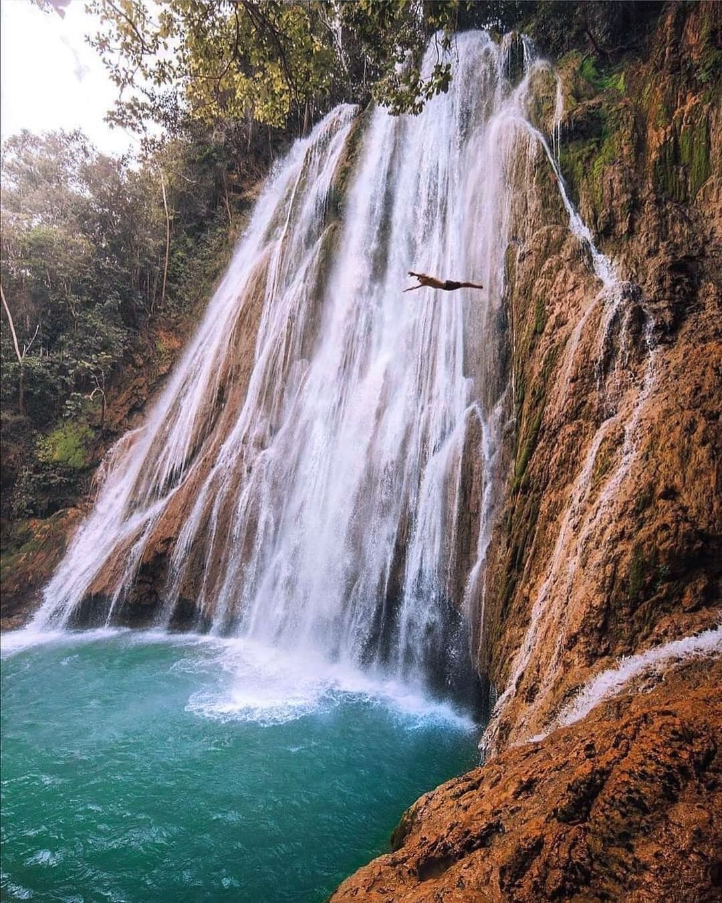

The Most top five Best Places In The Germany

Location: Situated on the easternmost tip of the Dominican Republic, Punta Cana is renowned for its stunning beaches along the Caribbean Sea and the Atlantic Ocean.
Best Time to Visit: The optimal period is during the dry season, from December to April, offering warm temperatures ideal for beach activities.
ISLA GURU
Info: Punta Cana is famous for its white-sand beaches lined with palm trees and clear turquoise waters. It's a popular destination for all-inclusive resorts, water sports, and relaxation. The area is well-developed for tourism, providing a range of amenities and activities for visitors.
Jarabacoa Mountains

Location: Situated in the central region, within the Cordillera Central mountain range.
Best Time to Visit: December to March, offering cooler temperatures ideal for outdoor activities.
EVERYTHING PUNTA CANA
Info: Known as the "City of Everlasting Spring," Jarabacoa boasts a temperate climate and mountainous terrain. It's a hub for eco-tourism and adventure sports, including hiking, rafting, and paragliding. The area is also home to pine forests, coffee plantations, and several waterfalls, making it a diverse destination for nature lovers.
El-Limon-Waterfall

Location: Nestled in the Samaná Peninsula, near the town of El Limón.
Best Time to Visit: December to April, when trails are less muddy, making the hike to the waterfall more accessible.
ISLA GURU
Info: El Limón Waterfall is a spectacular 130-foot (40-meter) cascade surrounded by lush tropical forest. Visitors can reach the waterfall via guided hikes or horseback rides through scenic trails. The base of the waterfall features a natural pool, perfect for a refreshing swim. It's a must-visit for nature enthusiasts seeking adventure.
Saona Island

Location: Situated off the southeastern coast, Saona Island is part of the East National Park.
Best Time to Visit: December to April, during the dry season, ensures calm seas and ideal beach conditions.
ISLA GURU
Info: Saona Island is renowned for its unspoiled beaches, crystal-clear waters, and diverse marine life. It's a popular day-trip destination from Punta Cana and Bayahibe, offering opportunities for snorkeling, swimming, and relaxation. The island is also known for its natural swimming pools and rich biodiversity.